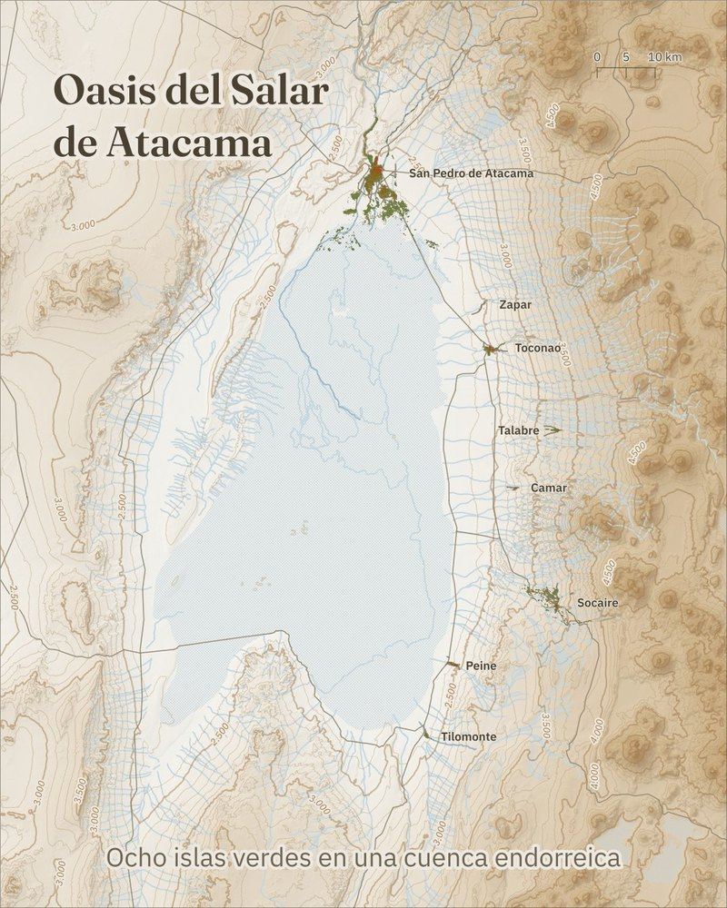

Láminas geográficas
Series
Cada serie parte de una pregunta geográfica sencilla y la responde con un mapa: qué hay, dónde está y cómo se ve desde el espacio.

Serie 01 · Región de Antofagasta
Oasis del Salar de Atacama
Ocho islas verdes en una cuenca endorreica: San Pedro de Atacama, Zapar, Toconao, Talabre, Camar, Socaire, Peine y Tilomonte, vistos con Sentinel-2.
Ver la serieNuevas series en preparación.